Tamanna Ananna
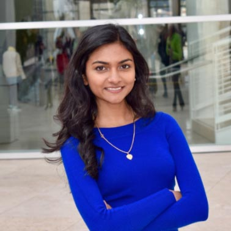
My name is Tamanna. Originally from Dhaka, Bangladesh, I have been living in Folsom, California for about 8 years now. A junior in the Chemical and Bioengineering Department, I joined iGEM because it was a fantastic way to work with my peers who were just as passionate about biotech and create something together. In my spare time, I love drawing and sketching -- in fact I have just begun a crazy art project where I am sketching all of my favorite paintings, people, and places to plaster all over my wall. Fun fact about me -- I was bitten by a monkey while hiking in the Sundarban Forest in Bangladesh when I was 8.
Helen Park
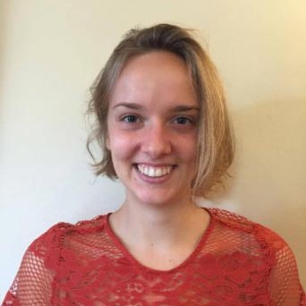
My name is Helen, and I’m a junior in the Chemical and Biological Engineering Department. I hail from Rockville Maryland -- that just so happens to have the largest indoor rock-climbing gym in the nation, a favorite hobby of mine. Other things I do in my spare time include painting, furniture/jewelry making, photography... anything crafty really. I’m in iGEM to put all the class-work and lab experience we’ve gained to good use, and because I wholeheartedly believe we as a team can design something innovative and valuable to society. A fun fact about me: I have a complicated relationship with hot tubs.
Ifunanya Nwogbaga
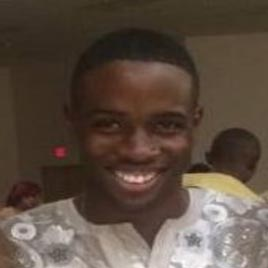
My name is Ifunanya Nwogbaga and I am currently a junior in the Chemical and Biological Engineering program at Princeton University! I was originally born in Enugu, Nigeria but now I live in Dover, Delaware with my immediate family. I joined iGEM because I was interested in bioengineering and biotechnology and I wanted to get experience developing a new project using the things I have learned over the years. For me, it was a way to put my knowledge to good use without it having to be some boring government job but instead a cool, innovative project! What I like to do for fun mostly is run, do Taekwondo, and draw! A fun fact about me is that I have almost 100 cousins!
Alev Baysoy
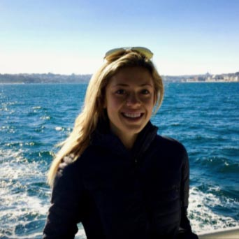
My name is Alev Baysoy and I am a junior in the CBE department at Princeton. I am from St.Paul, Minnesota and I decided to join iGEM because I wanted more experience in the biological side of engineering (as chemical and biological engineering are clumped together as a major) as well as gain more experience in the application of the engineering work that I do to industry and I feel that iGEM is a great liaison for this. I want to pursue a career relating to bioengineering and biotech, and am really excited to work on a meaningful project in the lab. My hobbies include running, cooking, crossfit, and travelling. A fun fact about me is that I am a dual-citizen with Turkey.
Matt Wang
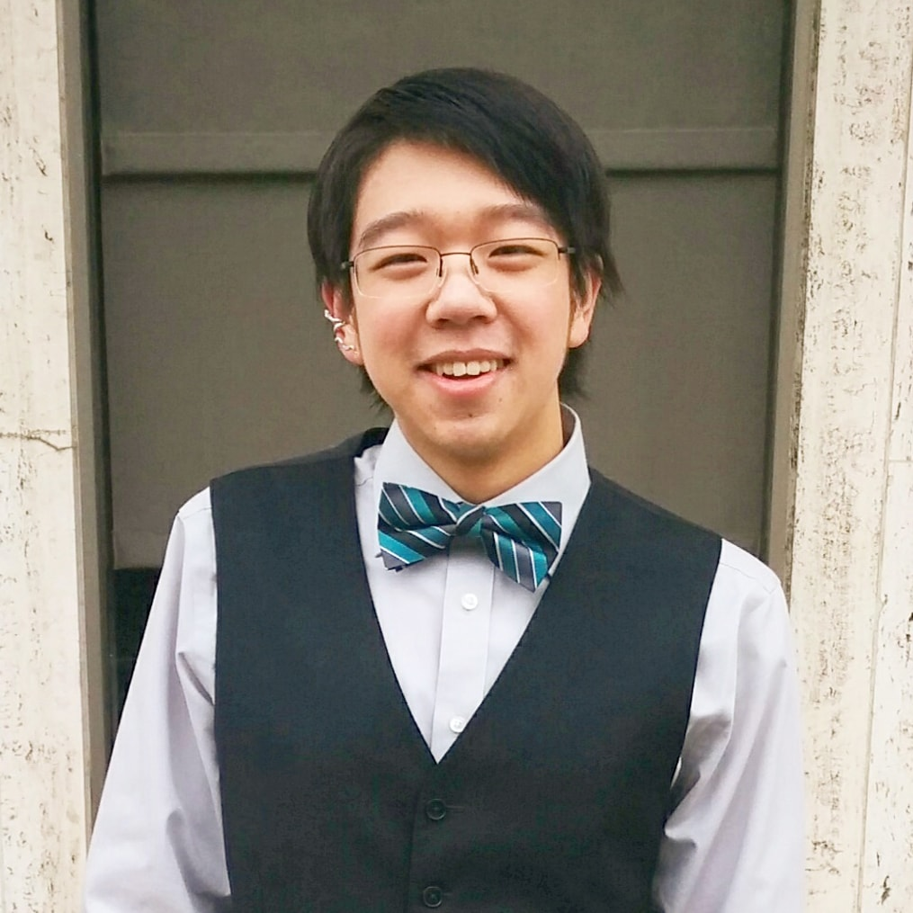
My name is Matt Wang, and I’m a sophomore in the Electrical Engineering department at Princeton University. I’m from San Jose, California. I’m in iGEM because I’m interested in biodevices, both the lab work and experimental inquiry and the electronic instruments that allow bioengineered organisms to be practically used outside of the controlled confines of the lab. Through our endeavors, I hope to gain lab experience, and also a better understand of the workflow of creating novel technology. Outside of iGEM, I also enjoy singing and cooking, and a fun fact about me is that I share my bed with eight stuffed animals.
Allyson Brown
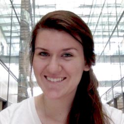
Hi, my name is Allyson, and I am from Santa Maria, California. I am a junior Chemical and Biological Engineering major, while pursuing a certificate in Engineering Biology. I have been intrigued by the field of genetic engineering since high school, and after learning more about it in college, I joined the Princeton iGEM team. Apart from iGEM, I enjoy taking ballet classes, playing piano, and baking chocolate chip cookies in my occasional free time. Fun fact about me: I have not eaten a banana for at least 8 years; I despise bananas.
Andy Liu
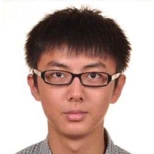
My name is Andy Liu and I am a sophomore in the Chemical and Biological Engineering department. I am from Shanghai, China, but I went to high school in Concord, NH. I decided to join iGEM because it is a good way for us to apply the knowledge we’ve learnt in class to do something exciting. I enjoy running and I sing in the University Chapel Choir. A fun fact is that I did Nordic Skiing in high school and wish I could still do it here.
Arthur Kim
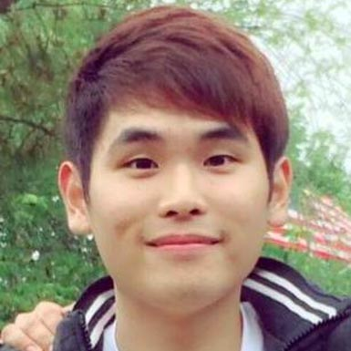
My name is Arthur Kim, a junior in the Chemical and Biological Engineering department here at Princeton University. I am from Palisades Park, New Jersey. I decided to join iGEM because I wanted to learn more about bioengineering and biotechnology, while also gaining hands-on experience from working in the lab. I like to play tennis and go snowboarding during my free time. A fun fact about me is that I love wearing hats and collecting them.
Avery Kratzer
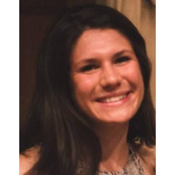
My name is Avery Kratzer, and I’m a junior in the Chemical and Biological Engineering Department here at Princeton. I am from Long Island, NY. Learning a little about tissue engineering back in high school was what first sparked my interest in synthetic biology. At Princeton, iGEM has been a great opportunity to learn more about the endless possibilities in the realm of genetic engineering and to delve into research. Outside of the lab, I spend most of my time running, painting, and baking. A fun fact about me is that as a Long Island native, I (naturally) am a fan of bagels, the beach, and Billy Joel.
Douglas Diehl
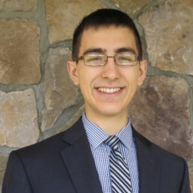
My name is Douglas Diehl, and I am a junior in the Chemical and Biological Engineering Department. I am from LaGrangeville, NY. I decided to join iGEM because I find bioengineering and synthetic biology extremely interesting. I am looking forward to devising and working out a project and hopefully getting some interesting results.
Elisa Vera
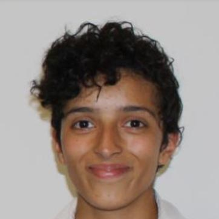
Hey there! I am Elisa and I am from West Windsor, New Jersey. I am in the class of ‘18 and a Chemical and Biological Engineering major. The concept of “don’t worry you’re not the first nor the last” deeply resonates with me. With this philosophy, the key to many problems lies in looking at what others have done before you or in some cases just looking at what already exists. Since genetic modification often means transplanting an already existing solution to a biochemical problem from one species into another, I’ve always had an interest. Aside from iGEM I do Rugby, and treasure for a few student groups. Fun fact, I have never chewed bubble gum.
Manisha Kapasiawala
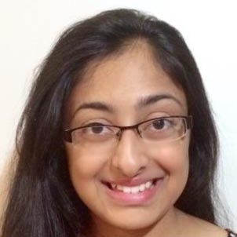
My name is Manisha, and I'm a sophomore in the Chemical and Biological Engineering department. I'm from the casino town of Atlantic City, New Jersey, home to the Miss America Pageant and location of the streets in the original Monopoly board game. I joined iGEM to further my interests in genetic engineering and biotechnology and apply the knowledge I have learned in classes in a practical setting. Outside of iGEM, I am a part of Princeton’s Tiger Challenge team focusing on improving K-12 education in NJ, and my hobbies include reading novels, photography, walking on the beach, and browsing Reddit. Fun Fact: I have seen a UFO!
Michael Gao
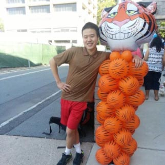
Hello! My name is Mike, and I hail from Freehold, New Jersey. I am a sophomore Chemical and Biological Engineering major interested in pursuing certificates in Engineering Biology and Finance. Using genetic and bioengineering to improve human health and industrial output is something I hope to explore further through iGEM. Outside of iGEM, I am an avid swimmer, writer for the Daily Prince, and Outdoor Action leader. Fun fact: I really like country music.
Rohan Sinha
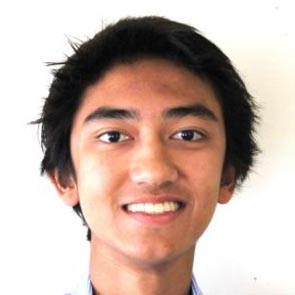
My name is Rohan, and I'm a sophomore in the Chemical and Biological Engineering department. I grew up in the far away land of Taiwan (it's not Thailand), where they eat chicken claws and beef tongue. But it also houses the world's 10th tallest building and has high speed rails connecting all the major cities, so we've got a good mix of ancient and modern. I'm in iGEM because I hope to ultimately contribute to universal quality healthcare and clean energy for every human being on our planet, and iGEM is a great way to work on creative solutions to these problems. Besides iGEM and chemical engineering, I also love to play tennis, read novels, and compose on the piano. A fun fact is that I love to eat eggs with soy sauce, probably because it’s how my grandmother makes them.
Samvida Venkatesh
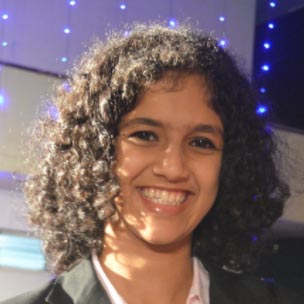
My name is Samvida, and I’m a sophomore in the Molecular Biology Department. I am from the city of Bangalore in India, famous for coffee and computers. I’m interested in iGEM because I want to work on science that has a direct impact on the community, and biotechnology seems to be a fast-growing field that does exactly that. Apart from iGEM, I’m involved closely with club badminton, the international community and the chocolate-making club (ask me more). A fun fact: I once won a contest for reading the most number of novels in two weeks...
Stephen Wong
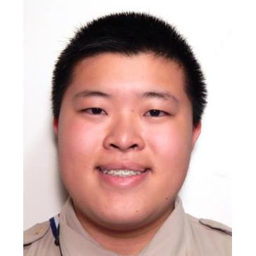
My name is Stephen Wong, and I am a sophomore in the Chemical and Biological Engineering Department here at Princeton. I am from Liverpool, a city in upstate New York. I joined iGEM so I could get some hands on lab experience with genetic engineering. I’ve always heard about genetic engineering in the classroom and general discussions. I wanted the chance to get hands on experience actually engineering some of the ideas which many of us never even consider beyond hypotheticals. Beyond iGEM and schoolwork I’m an active member of the Princeton Archery Club, and 3D Printing Club. A fun fact about me, I am an Eagle Scout, and I have been volunteering with their programs every summer for the past six years.